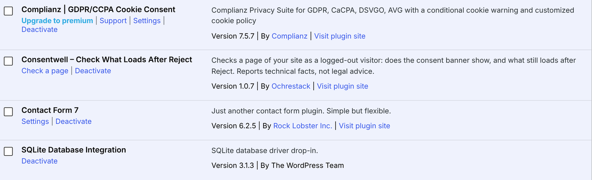

Consentwell quick start
Install Consentwell, run your first check, read the result, and run Consentwell Pro on your sitemap. The limits, the other consent plugins and the finer points are on Consentwell in detail; what was run to test it is on How Consentwell was tested. Back to the Consentwell product page.
Install
Requires WordPress 6.5 or later, PHP 7.4 or later, and an administrator account.
The free plugin
- Download consentwell.zip (version 1.0.7) from this site. Do not unzip it.
- In WordPress, go to Plugins > Add Plugin (WordPress 6.5 calls it Add New Plugin), click Upload Plugin, choose
consentwell.zip, then Install Now and Activate Plugin. - WordPress says “Plugin activated.” Consentwell adds no wizard, no redirect and no notice. Find it in two places: a Check a page link under its name on the Plugins screen, and Tools > Consentwell.
Consentwell Pro (after the free plugin)
- Download
consentwell-pro-from Polar, through the link in the order email, and unzip it once. It holdsdownload.zip consentwell.zip,consentwell-pro.zipandINSTALL.txt. Upload the two zips inside it, not the download itself: uploadingconsentwell-pro-shows “No valid plugins were found.” Do not unzip the two plugin zips.download.zip - Install and activate
consentwell.zipfirst, as above (skip this if the free plugin is already active). - Then do the same with
consentwell-pro.zip. Pro adds Tools > Consentwell Pro. If you upload Pro alone, the Plugins screen says “You cannot activate this plugin as it has unmet requirements” and WordPress will not activate it; install and activate the free plugin first.
On a phone the screenshots are wider than the screen: swipe each one sideways to read it →

Your first check
- Go to Tools > Consentwell. The note under the form names your consent plugin, for example “Consent plugin: Complianz 7.5.7. Consentwell clicks its Reject button for you.”
- Under Page to check, pick the home page, a page or a recent post, or type the address of a published page of this site (the full address, or a path such as
/about/). An address that is not a page, or a page that is not published, stops with one sentence and is not stored. - Click Check this page and keep the screen open. The button stays where it is; the status line and the check window appear under it, and when the check finishes the window gives way to the result. A check takes about 20 seconds.
- Read the result under the status line. Under Share this result, Copy as text gives a plain-text summary for your consent plugin’s support forum.
What the check does while it runs, and the second button, Server-side check only, are explained in Consentwell in detail.
![Tools > Consentwell before any check: the heading, 'Does the consent banner show on a page of your site, and what still loads after Reject? Checked as a logged-out visitor.', the Page to check list set to Home page beside the address field, the Check this page and Server-side check only buttons with 'No check window and no Reject click: only the page's HTML and the cookies it sets.', the line saying results are technical facts and not legal advice, the note naming Complianz 7.5.7, and 'Last 20 checks: No checks yet'](img/tools-first-screen.png)
Reading the result
- Three banner facts: banner in the page HTML, visible on screen, Reject button visible on the first layer. When the banner is in the HTML but not on screen, a Likely cause box says what hides it.
- Before any choice and After Reject (page reloaded): the requests to other domains the page made while Consentwell watched it, each with its full address. One counted sentence sits above them (“All 4 addresses requested before any choice were requested again after Reject”).
- An empty After Reject list is not an all-clear: it means nothing to another domain was seen in the seconds watched, which are printed under each list.

Consentwell Pro
- Go to Tools > Consentwell Pro (or use the Check every page link under Pro’s name on the Plugins screen) and click Check every page. Pro reads your sitemap and checks each address in turn.
- Keep the screen open: a page takes about 20 seconds, so 120 pages take about 40 minutes. A run covers at most 5,000 addresses from at most 200 sitemap files, and the summary says so when your sitemap is bigger. Pause at any time; Resume continues with the next page, also after you leave the screen and come back.
- At the end: a summary, a table of every page with each page’s likely cause under its address, and Download CSV.
- Pro clicks Reject on Complianz and CookieYes banners; on any other banner it lists what loads before any choice only.
![Tools > Consentwell Pro after two runs on the demo bakery site: the summary (9 of 9 pages checked; two rows, pages with third-party requests after Reject, 9, and before any choice, 9; then one line, 'No page with: banner did not show, ...', naming the cases with no page), the most common addresses before any choice and after Reject with the number of pages for each, and a Since the previous run list: three new addresses requested after Reject on the Our breads page, and 'banner did not show' gone, with a Download CSV button](img/pro-summary.png)
More
Another consent plugin, what the check does not do, updating, removing the plugin and what it stores are on Consentwell in detail.
Support
Email support@ochrestack.com with your WordPress and PHP versions, your consent plugin and its version, the address you checked, and the text from Copy as text.